Installation
Pre-requisites
Vulcan pre-setup should be installed once, before installing the Vulcan installer. This will install .Net 8 and redistributable required by Flux and Vulcan.
Pre-setup can be downloaded from the below link:
Graphics requirement
Make sure that computer’s open graphics library version should be above 3.2 to work.
If the graphics card does not meet this requirement, application will prompt the following message:
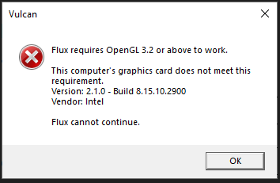
Setup Installation
Install the required version of Setup.Vulcan.exe
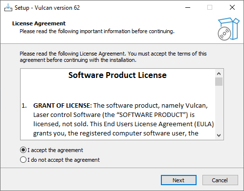
License
To use Vulcan, a serial key is required. On opening Vulcan, a registration window appears where the serial key needs to be entered.
| An active internet connection is required for activating the license. |
For a new license, send a license request mail using your official mailing address to deepakraja.shanthakumar@trumpf.com
If the internet connection is not available or the license server is not reachable due to a firewall, offline activation is possible.
-
Enter the serial key in the registration window. Connection to server failed error message will be displayed.
-
Send the file Vulcan.request found in folder C:\ProgramData\Metamation\Vulcan\Data to deepakraja.shanthakumar@trumpf.com along with the serial key used.
-
After receiving Vulcan.lock file place it in the above folder. This will activate the license.
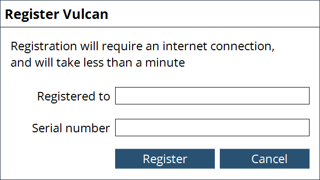
Save Backup
To save backup from the machine. Click diagnostics option and select save backup.
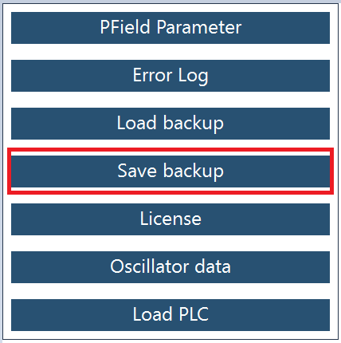
Select the required files and save it.
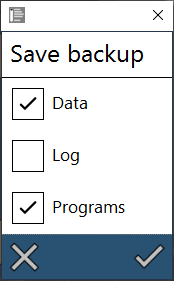
Application will prompt a confirmation message along with the location path details. Files will be saved in .Zip format.
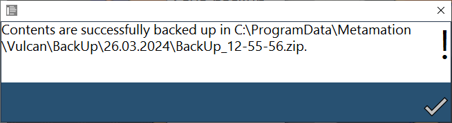
If the backup file is not in correct format, below mentioned popup message will occur.
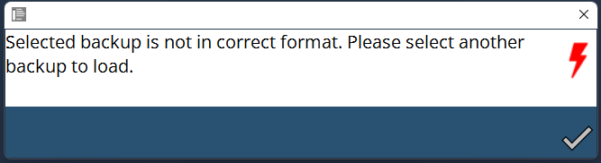
Load Backup
To load backup in the machine. Click diagnostics option and select load backup
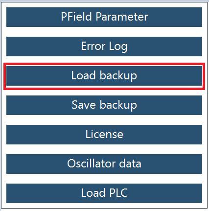
Select the backup file and click done.
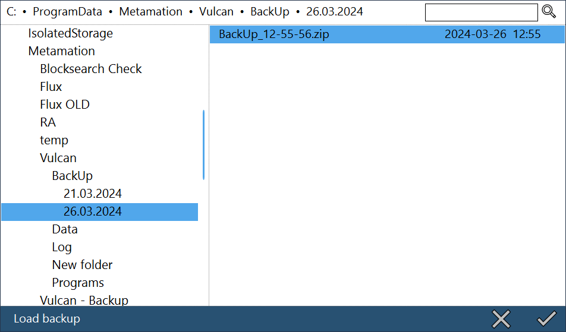
Once backup Is loaded, application will prompt a confirmation message to restart Vulcan.
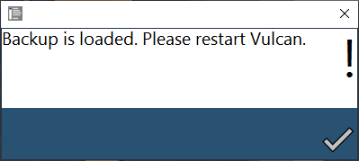
| Make sure that the respective data according to the HMI version is loaded. |
In Vulcan 62, PLC files of 2D LCM LIB V2.39 is to be used.If data loaded are not respective according to the HMI version, application will prompt a message as below,
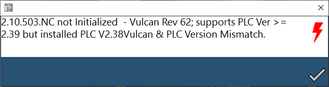
Load PLC
To load PLC files, Click diagnostics option and select load PLC.
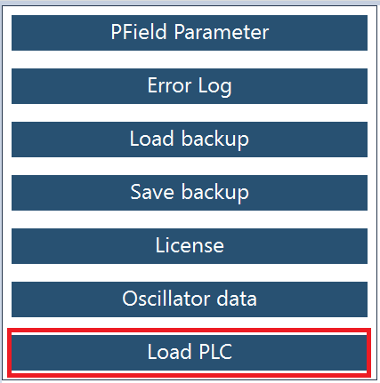
Select the respective files and click done. Application gets restart automatically with the newly loaded PLC.
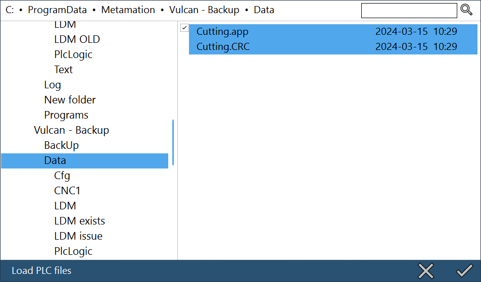